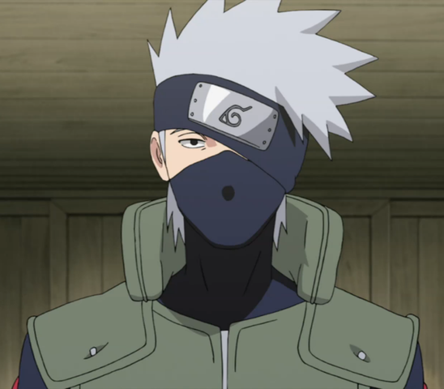
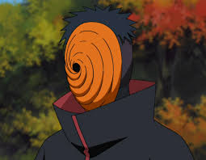

Автор
На цьому сайті зображено моїх улюблених персрнажів із аніме «Наруто» Какаши , Дейдара і Обіто. Я Гайдай Марія люблю малювати мрію стати програмістом. Вчусь в школі №29 мій улюблений урок англійска мова . Маю собаку , його звати Айрі, він породи (Той тер'єр )

